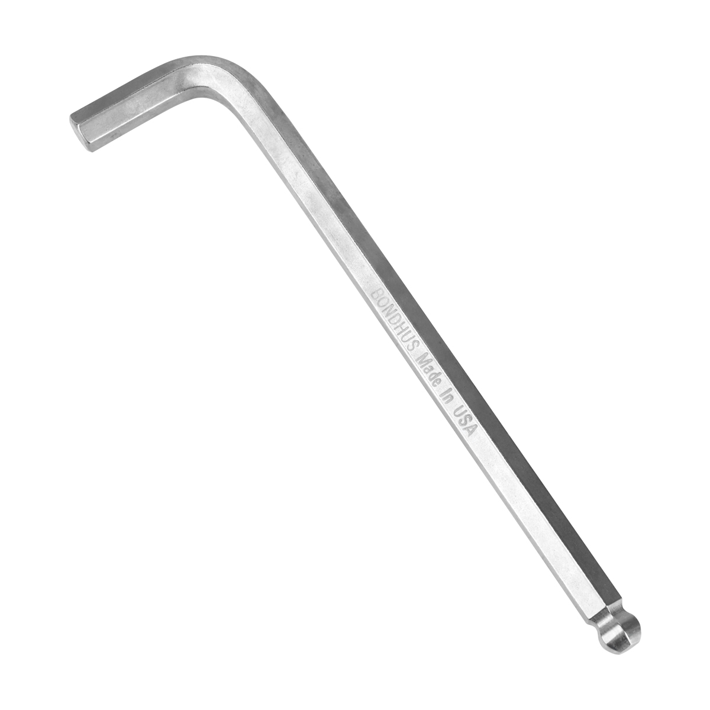
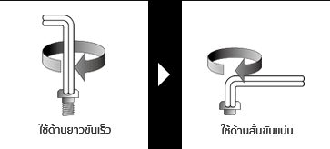
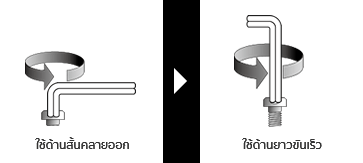

 ประแจหกเหลี่ยม เป็นเครื่องมือที่ใช้สำหรับขันยึดและคลายออกให้กับสลักเกลียว สกรูหัวจม หรือน็อตตัวเมียที่หัวหรือร่องเป็นรูปทรงหกเหลี่ยมได้ โดยลักษณะเด่นของประแจชนิดนี้ส่วนที่ใช้ขันมีรูปทรงหกเหลี่ยมเป็นหลัก ซึ่งยังมีอีกหลากหลายแบบให้เลือกใช้งาน ได้แก่ ประแจหกเหลียมตัวแอล ประแจหกเหลี่ยมหัวบอล ประแจหกเหลี่ยมตัวที และประแจหกเหลี่ยมหัวทอร์ก เป็นต้น ทั้งหมดนี้เป็นกลุ่มเครื่องมือประแจหกเหลี่ยม
สำหรับการใช้ในบางงานควรเลือกให้เหมาะสมกับขนาดของร่องบนหัวสลักเกลียวหรือสกรูหัวจม ช่วยให้การขันยึดและคลายออกมีความแม่นยำและไม่ทำให้ร่องเกิดความเสียหาย
คุณสมบัติ
คำแนะนำการใช้งาน
ข้อควรระวัง
คุณสมบัติ
-ผลิตจากเหล็กที่ได้คุณภาพ มีความแข็งแรงทนทานต่อการใช้งาน
-รูปแบบหัวหกเหลี่ยมเพื่อการขัน และคลายสกรู หรือน็อตหัวหลุมหกเหลี่ยม
-รองรับแรงบิดขณะหมุนเกลียวขันสกรู และน็อตได้ดี ยากต่อการบิ่น และหัก
-ด้ามจับออกแบบช่วยให้จับได้ถนัดแน่น ทำให้กระชับมือมากยิ่งขึ้น
-ประแจหลากหลายขนาด เพื่อเลือกใช้งานตามความเหมาะสมต่อชิ้นงาน
-กระบวนการผลิตมาตรฐานจากโรงงาน ใช้งานได้อย่างมั่นใจ
Back to top
คำแนะนำการใช้งาน
ขั้นแรกต้องตรวจสอบให้แน่ใจว่าขนาดของประแจหกเหลี่ยมและสกรูมีขนาดเท่ากัน หากขนาดทั้งคู่ไม่เท่าไหร่จะทำให้มีช่องว่างระหว่างกัน ทำให้การขันเกิดการขยับไปมาได้ ดังนั้นจึงควรเลือกขนาดให้ถูกต้อง
หลังจากเลือกขนาดที่ตรงกันแล้วให้ใช้ฝั่งที่ยาวกว่าขันสกรู หลังจากนั้นใช้มืออีกข้างประคองสกรูพร้อมกับขันไปด้วย เมื่อขันใกล้สุดแล้วให้เปลี่ยนเอาฝั่งสั้นขันแน่นย้ำในขั้นตอนสุดท้าย
เมื่อต้องการคลายสกรูที่แน่นออกให้ใช้ฝั่งสั้นในการขัน หลังจากคลายสกรูที่แน่นออกได้แล้วให้เปลี่ยนเป็นใช้ฝั่งยาวหมุนออกได้ทันที เพื่อให้การขันออกรวดเร็วยิ่งขึ้น
เวลาขันให้แน่น

เวลาคลายออก

Back to top
ข้อควรระวัง
-ห้ามใช้สารเคมีเข้มข้น ผลิตภัณฑ์ประเภทกรด-ด่าง และวัสดุผิวหยาบทำความสะอาด
-ห้ามดัดแปลง แก้ไข และใช้งานประแจผิดประเภท ผิดวิธีการใช้งาน
-ห้ามจัดเก็บบริเวณที่ใกล้ความร้อน-ชื้น น้ำ และเปลวไฟ รวมถึงจัดเก็บพ้นมือเด็ก
Back to top
แหล่งที่มา : https://www.homepro.co.th/p/1042426
แหล่งที่มา : https://th.misumi-ec.com/th/vona2/fs_processing/T0600000000/T0602000000/
แหล่งที่มา : https://www.monet.asia/what-is-a-hex-wrench/